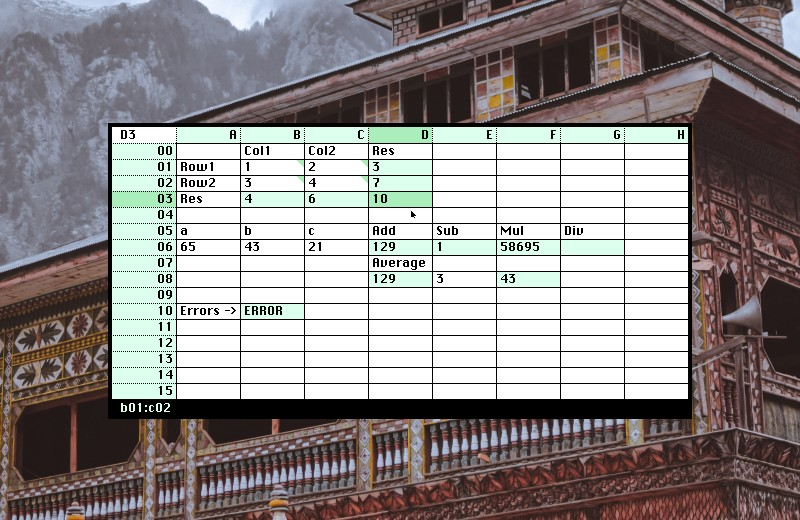
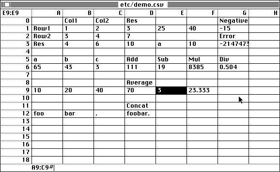

A spreadsheet editor.
Nebu is a graphical spreadsheet editor for the Varvara system, designed to handle csv/tsv files. Math operations are done by specifying a rectangle range of cells, followed by an operator. A rectangle uses the colon character between two cell identifiers. A cell does at most one operation, and the range must precede the cell and may not include itself recursively.
A5:C7*
There are four arithmetic operator + - * /, four logic operator = ! > <, as well as # to get the number of non-empty cells in a range, and " to concatenate strings. If an operator is not specified, it will default to returning the sum.
Press ctrl+/ to see the list of files and ctrl+enter to enter a file. Press shift+enter to input the selected rectangle at the active cell.
Launches instantly, and weights less than an empty Excel file.
- Source, Latest
- Repository
- 32-bit fixed point code, by eiríkr åsheim
- Support: Theme | Manifest | Theme | Snarf

incoming: varvara changelog 2026 2025 2022